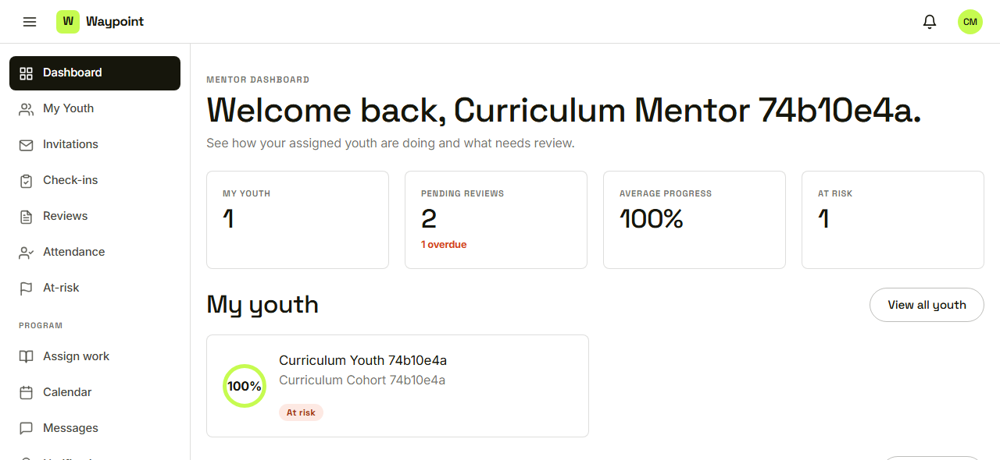
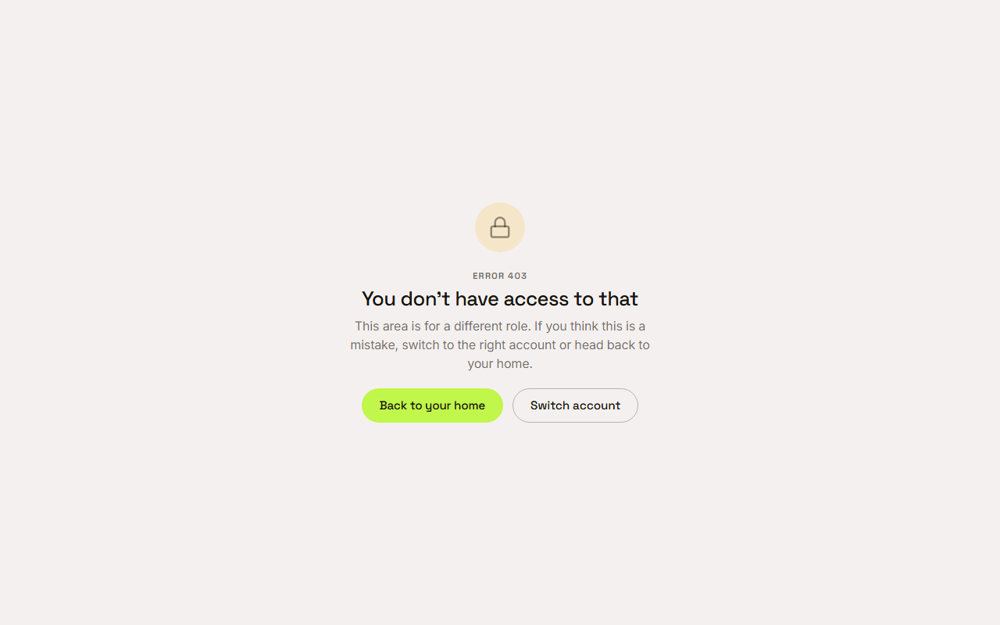
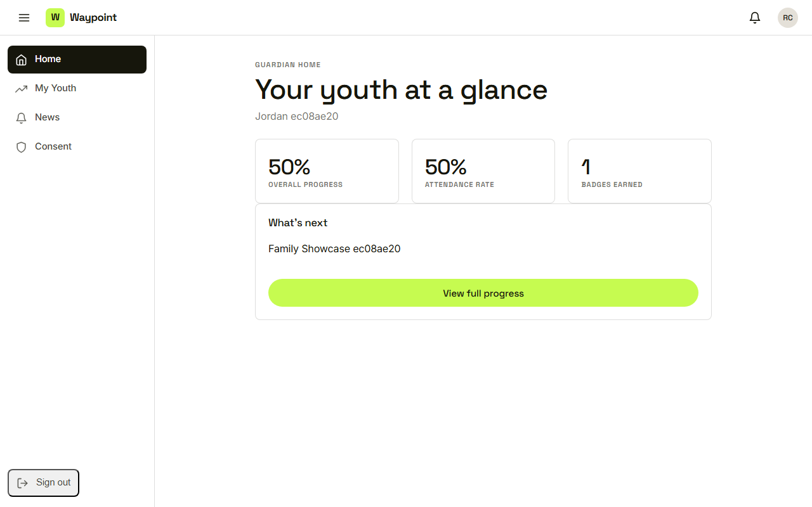
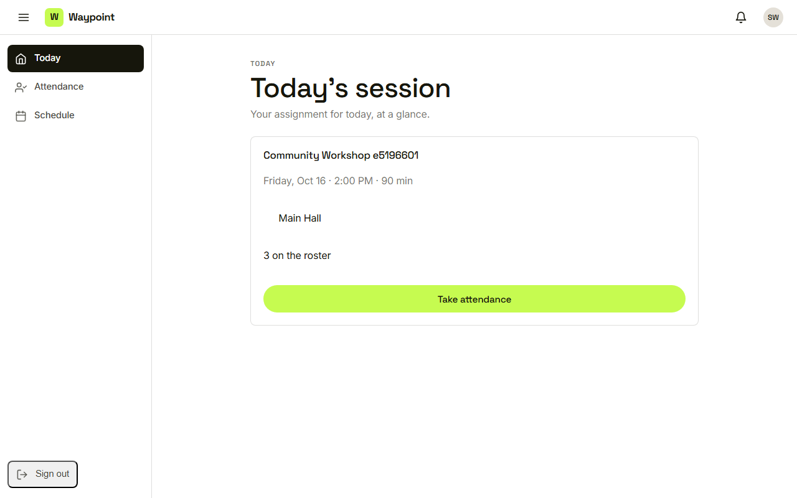

Waypoint · Video 011
Seeing only what your role allows
Each role gets its own slice of the data
A mentor sees assigned youth

Only the youth assigned to this mentor
A different role means no access

Back to your home, or switch account
A guardian sees a summary

Their own child, summary only
A volunteer sees one session

One session, names only
Administrators see all cohorts
- Every cohort is visible
- Private check-in note contents stay restricted
Things to remember
- A mentor sees assigned youth
- A youth sees their own records
- A guardian sees a summary of their own child
- A volunteer sees one session, names only
- The server decides, every time